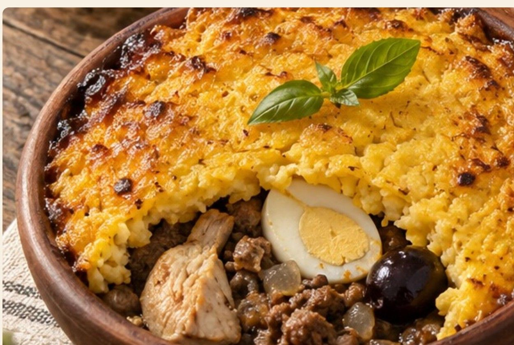
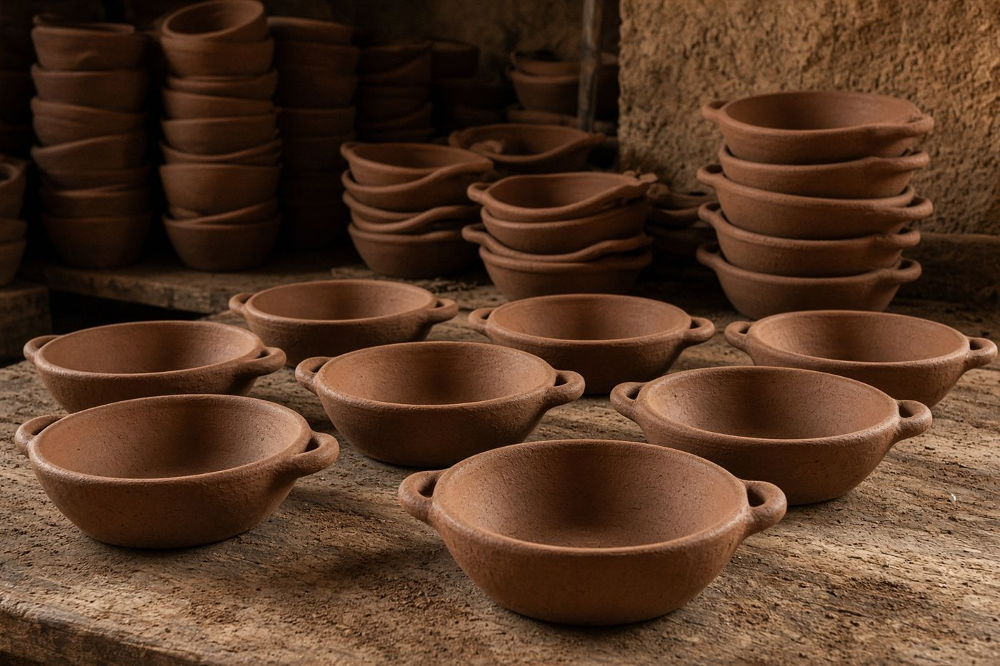

Início / Onde comprar
Onde comprar
Oficina em Pomaire e canais digitais para o pedido, a retirada e a entrega refrigerada.

Canais de venda no Chile
A operação se ancora em Pomaire e se apoia em canais digitais para a venda local.
Site próprio
Catálogo, preços e pedido com retirada ou entrega agrupada.
WhatsApp Business
Pedidos diretos e coordenação da entrega refrigerada.
Vitrine do produto, conteúdo de marca e link para pedidos.
Feira de Pomaire
Venda presencial e degustação para visitantes.
Oficina Greda Dourada
- Endereço
- Camino Melipilla s/n, setor artesanal
- Localização
- Pomaire, comuna de Melipilla, Região Metropolitana, Chile
- O que é
- Ponto de produção e retirada, junto às oficinas de olaria tradicional.
Endereço fictício, do projeto simulado.

Como o pedido chega até você
Retirada
Busque na oficina, em Pomaire.
Entrega agrupada
Pedidos reunidos para a entrega refrigerada, entre 0 e 4 °C.
Recipiente retornável
A paila ou a travessa volta na próxima entrega e gera desconto.